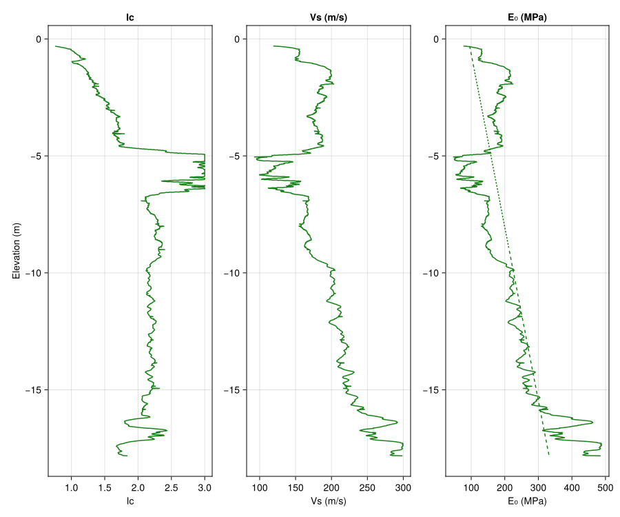

Tutorial
Pkg> add "https://github.com/antonyorton/PileResponse.jl"
push!(LOAD_PATH, "../../src/") #This line can be ignored if the package is added as above
import PileResponse as prs
using CairoMakie
CairoMakie.activate!(type="svg");Read CPT data
The first thing we need to do is to read CPT data from a text file such as a .csv file. It is a requirement that the file has columns for:
- depth (m)
- qc (MPa)
- fs (kPa)
- u2 (kPa)
The column names should be sensible or the program will not be able to guess them. You will also need to ensure the correct relative path to your file and the correct delimeter, for example comma (',') or tab ('\t').
data = prs.read_delimited_text_file("../../data/example_cpt_data.csv", delim=',');We now extract the column names and assign the data to variables.
depth_col, qc_col, fs_col, u2_col = prs.find_cpt_column_names(collect(keys(data)));
depth_m = data[depth_col];
qc_MPa = data[qc_col];
fs_MPa = data[fs_col] * 0.001;
u2_MPa = data[u2_col] * 0.001;Plot the CPT data
It is recommended to plot the data and check that it is as expected by comparing to pdf reports if available.
f = Figure(size=(900, 750));
ax1 = Axis(f[1, 1], title="qc (MPa)", xlabel="qc (MPa)", ylabel="Elevation (m)");
ax2 = Axis(f[1, 2], title="fs (kPa)", xlabel="fs (kPa)");
ax3 = Axis(f[1, 3], title="u2 (kPa)", xlabel="u2 (kPa)");
lines!(f[1, 1], qc_MPa, -depth_m);
lines!(f[1, 2], fs_MPa, -depth_m);
lines!(f[1, 3], qc_MPa, -depth_m);
fSoil properties and depth to groundwater
We assign some properties here which are assumed to be constant over the soil profile. The loss in accuracy from assuming a constant soil unit weight is likely to be acceptable for most situations.
Soil properties
gamma_soil = 20.5; #Soil unit weight (kN/m3)
Poisson_ratio = 0.3;Groundwater depth
gw_depth = 3.0; # m below groundDerive $I_{c}$, $V_{s}$ and $E_{0}$
From the correlations published by Roberston and Cabal (2022), we derive
The soil behaviour type
- $I_{c} = \sqrt{(3.47 - log_{10}(Q_{t}))^{2} + (log_{10}(F_{r}) + 1.22)^{2}}$ , and
The shear wave velocity
- $V_{s} = \sqrt{(\alpha_{vs}\cdot \large\frac{q_{n}}{\small{0.101}})}$, where $\alpha_{vs} = 10^{(0.55 Ic + 1.68)}$
We then use the following two relationships to derive the small strain elastic modulus $E_{0}$:
$G_{0} = \frac{\gamma}{9.81} \cdot V_{s}^2$
$E_{0} = 2(1 + ν)G_{0}$
Ic = prs.get_Ic(depth_m, qc_MPa, fs_MPa, u2_MPa, gw_depth, gamma=gamma_soil, a=0.73);
Vs = prs.get_Vs(depth_m, qc_MPa, fs_MPa, u2_MPa, gw_depth, gamma=gamma_soil, a=0.73);
E0 = prs.get_E0(Vs, gamma=gamma_soil, ν=Poisson_ratio);Linear approximation to $E_{0}$ with depth
For the assessment of the intial pile head stiffness, we need to model the soil profile as having a linearly increasing elastic modulus with depth. This is common in many situations.
We fit a line to the $E_{0}$ data using a least squares fit
fun_E0_linear = prs.get_least_squares_interpolator(depth_m, E0);Plot the derived values from the CPT data
(the code, which is similar to above for plotting the raw data, is hidden)
Pile load test details
For this tutorial, we consider a pile load test which was carried out at Mobile, Alabama. The test comprised a 457 mm diameter, 9.5 mm wall, closed-toe, steel-pipe pile driven to 17.0 m below ground and grouted after driving. The pile stick up was approximately 0.9 m above ground.
Further details of the test can be found at the website of the test organiser www.fellenius.net.
Pile properties
We list the available pile types
prs.list_available_pile_types()15-element Vector{Any}:
"Bored pile - dry bored pile"
"Bored pile - no support"
"Bored pile - permanent casing"
"Bored pile - recoverable casing"
"Bored pile - with slurry"
"Bored pile - with slurry and grooved sockets"
"CFA pile"
"Driven pile - cast in place"
"Driven pile - concrete coated steel"
"Driven pile - pre-cast concrete"
"Driven pile - steel H pile"
"Driven pile - steel closed ended"
"Driven pile - steel open ended"
"Screw pile - cast in place"
"Screw pile - with casing"Assign a pile type for the assessment
pile_type = "Driven pile - steel closed ended";Assign the pile length
pile_toe_depth = 17.0; # metresAnd the pile diameter
pile_diameter = 0.457; # metresThe pile elastic modulus Epile_MPa for this case is caculated assuming a steel shell, grout filled circular pile
odiam = 0.457;
idiam = 0.457 - 0.0095;
Aouter = pi * odiam^2 / 4;
Ainner = pi * idiam^2 / 4;
Eouter = 200 # GPa;
Einner = 20 # GPa;
Epile_GPa = ((Aouter - Ainner) * Eouter + Ainner * Einner) / Aouter;Epile_MPa = round(Int64, 1000 * Epile_GPa);The elastic modulus of the pile is 27406 (MPa)Pile ultimate load assessment
In this section we calculate the pile ultimate load following the approach of Frank (2017).
Soil types
The calculation of pile ultimate resistance relies on several factors which require a soil type. Using the assessed $I_{c}$ value, the soil types required for the assessment are defined in this notebook as follows:
- $I_{c} > 2.60$ : Silt and clay (soil type 1).
- $2.05 < I_{c} \leq 2.60$ : Intermediate soil (soil type 2).
- $I_{c} \leq 2.05$ : Sand (soil type 3).
soil_type_CPT2012 = prs.get_soil_type_CPT2012(Ic);Pile ultimate shaft load
The ultimate shaft resistance for each node along the pile shaft is obtained as follows:
- $f_{s} = \alpha\cdot f_{sol}$, with $f_{sol} \leq f_{smax}$
where:
- $f_{sol}$ is the unfactored shaft resistance dependent on $q_{c}$ and soil type.
- $\alpha$ is a factor dependent on soil type and pile type.
- $f_{smax}$ is a the limiting shaft resistance dependent on soil type and pile type.
$f_{sol}$ is shown below for sands and clays. Note that for intermediate soils the function linearly interpolates $f_{sol}$ between $I_{c} = 2.05$ (sands) and $I_{c} = 2.60$ (clays).
fig_fsolWe first calculate the ultimate resistance (MPa) for each node along the pile
fshaft_MPa = prs.get_ultimate_shaft_resistance(qc_MPa, Ic, pile_type, factor=1.0);Then the ultimate shaft load (MN) for the whole pile
ult_shaft_MN = prs.get_ultimate_shaft_load(depth_m, fshaft_MPa, pile_diameter, pile_toe_depth);The ultimate shaft load is 1.103 (MN)Pile ultimate base load
The ultimate base load is obtained as follows:
First, we obtain the ultimate base resistance (MPa):
- $f_{b} = k_{c}\cdot q_{ca}$
where:
- $k_{c}$ is a factor dependent on soil type and pile class, and;
- $q_{ca}$ is the equavalent average cone resistance for the soil within 1.5 diameters above and below the pile base
qc_avg_base = prs.get_average_qc_at_pile_base(depth_m, qc_MPa, pile_toe_depth, pile_diameter, clip_to_30pct=false);kc_at_base = prs.get_kc_base_CPT2012()[pile_type][soil_type_CPT2012[depth_m.==pile_toe_depth]][1];We then caculate the ultimate base load
fb_MPa = kc_at_base * qc_avg_base;
ult_base_MN = pi * pile_diameter^2 / 4 * fb_MPa;And display the results
The average qc within 1.5 diameters from the pile base is 14.63 (MPa)
The factor kc is 0.4
The ultimate base load is 0.96 (MN)Pile ultimate load
pile_ult_load = ult_base_MN + ult_shaft_MNThe predicted pile ultimate load is 2.063(MPa)Pile load displacement response
The small strain elastic modulus, $E_{0}$, along the pile shaft is assumed to vary linearly, and a least squares approximation gives:
E_L = fun_E0_linear(pile_toe_depth)
E_Lon2 = fun_E0_linear(pile_toe_depth / 2)E₀ at the base of the shaft is 321 MPa
E₀ at the midpoint of the shaft is 206 MPaThe initial pile head stiffness, $k_{0}$, taking account of pile compressibility, is computed following the closed form elastic solution by Randolph and Wroth (1978) as:
k0 = prs.get_initial_pile_head_stiffness(pile_toe_depth, pile_diameter, Epile_MPa, E_L, E_Lon2, ν=Poisson_ratio)k₀ is 618 MN/mThe load displacement curve
The load displacement curve is derived following a method proposed by Mayne (2001), based on work by Fahey and Carter (1993), which assumes that the pile head stiffness varies as a function of the load ratio $P/P_{ult}$ as:
- $k = k_{0} \cdot (1 - (P/P_{ult})^{0.3})$
First we specify the pile head loads
pile_head_loads = 0.01:0.001:0.90*pile_ult_load;Then we calculate the cumulative displacement at each load
displacement = prs.get_pile_head_displacement(k0, pile_head_loads, pile_ult_load);Pile capacity
The pile capacity is calculated as the load at which the allowable pile head settlement is reached.
Specify the allowable pile head settlement (metres)
allowable_pile_head_settlement_m = 0.06;Then calculate the pile capacity
pile_capacity_MN = pile_head_loads[argmin(abs.(displacement .- allowable_pile_head_settlement_m))];The pile capacity is 1.755 MN
The displacement at capacity is 0.06 mPlot the load displacement curve (code is hidden)
figDispAnd display the results in a table
table_indices = pile_head_loads .< pile_capacity_MN
prs.show_table(
[pile_head_loads[table_indices], displacement[table_indices]],
["Load (MN)", "Displacement (m)"],
num_rows=10,
printformat="%8.3f"
)| Load (MN) | Displacement (m) |
|---|---|
| 0.010 | 0.000 |
| 0.203 | 0.001 |
| 0.396 | 0.002 |
| 0.589 | 0.003 |
| 0.782 | 0.005 |
| 0.975 | 0.008 |
| 1.168 | 0.012 |
| 1.361 | 0.019 |
| 1.554 | 0.031 |
| 1.747 | 0.058 |
Load carried by pile shaft at capacity
More to come soon ...
This page was generated using Literate.jl.